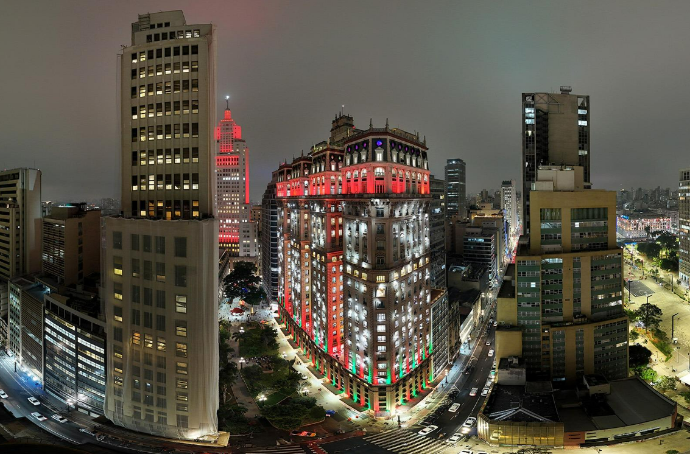

Lendas urbanas da Estação São Bento ao Cemitério da Consolação.
A partir de R$ --
Noturno · Van · 20h30 às 23h
Passeio noturno com foco em lendas urbanas e locais associados a histórias assustadoras. Inicia-se na Estação São Bento, passa pelo Edifício Martinelli, Viaduto do Chá, antigo Edifício Joelma, Copan e Cemitério da Consolação, com parada para visitação conforme as regras do local. O roteiro termina na região da Avenida Paulista.